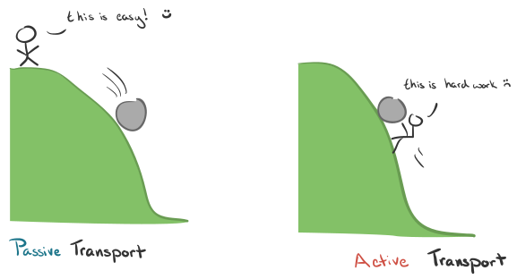

The difference in the concentration of a substance between two areas is called the concentration gradient . The bigger the difference, the steeper the concentration gradient and the faster the molecules of a substance will diffuse.
An electrochemical gradient is just like a concentration gradient, except with electrica charge. It is the driving force across a plasma membrane that dictates whether an ion will move into or out of a cell and it is established by both the concentration difference and the electrical charge difference between the surfaces of the membrane.
There are two major ways that substances are transported across cell membranes: passive tranport and active transport. However, these can be broke down into further sub-categories. 